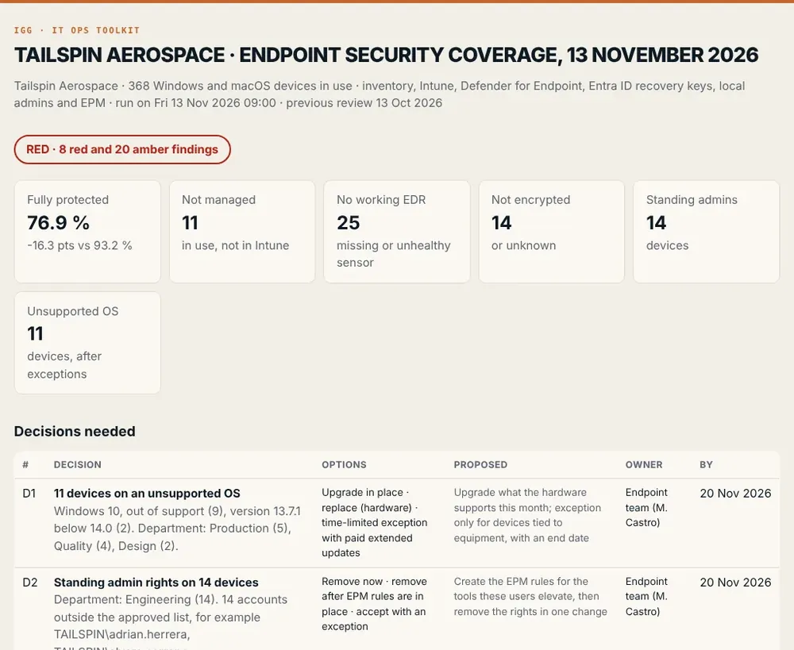

Solo el 76,9 % de los portátiles y sobremesas de una empresa está protegido del todo, frente al 93,2 % de hace un mes, y los huecos están entre las herramientas y no dentro de ninguna. Así lo detecta la revisión de cobertura de seguridad de los equipos que acompaña a este post, un proyecto de código abierto que se ejecuta con datos de ejemplo de un fabricante inventado de piezas para drones y aviónica, con dos sedes y 368 dispositivos en uso, revisado el 13 de noviembre con los problemas puestos a propósito.
Cada herramienta de seguridad enseña su propia vista, y cada una parece correcta por separado. Intune enseña el cumplimiento de los equipos que gestiona, Defender la salud del sensor de los equipos incorporados, y la CMDB, la base de datos de activos, lo que se compró. La revisión parte del inventario y le une los registros de Intune por número de serie y luego por nombre, y los de Defender por el identificador de dispositivo de Entra y luego por nombre, así que un equipo físico es una fila se llame como se llame en cada herramienta.
11 equipos sin gestionar y 25 sin un sensor que funcione
La demo está en rojo. 11 equipos no están gestionados, 25 no tienen un sensor EDR que funcione, el agente de detección y respuesta que vigila los ataques, 14 tienen administradores locales permanentes y 11 usan un sistema operativo sin soporte. Un equipo de campo montó unos cuantos portátiles en local para ganar tiempo y nunca llegaron a Intune ni a Defender, y unas estaciones de trabajo nuevas se inscribieron, pero su grupo no está en la directiva de incorporación.
Los hallazgos se agrupan por causa, así que seis estaciones de trabajo que faltan en Defender aparecen como un solo problema con un solo responsable. El mismo cruce enseña también los equipos que el inventario no tiene y los portátiles retirados que siguen conectándose.
Portátiles cifrados cuya clave el service desk no encuentra
Cada equipo se revisa control a control: gestionado, conforme, reportando, cifrado, clave de recuperación guardada, EDR incorporado y sano, antivirus sano, sin administradores locales permanentes y con un sistema operativo con soporte. Una actualización de firmware suspendió BitLocker y nadie lo reanudó. Los portátiles instalados con un proceso antiguo están cifrados, pero su clave de recuperación no está en Entra ID, así que el service desk no puede desbloquearlos.
Un proveedor pidió desactivar el antivirus en dos estaciones de CAD y se quedó desactivado. Windows 10 sigue en la planta de producción después del fin de su soporte. Cada control da cumple, no cumple, excepción o desconocido, y un equipo que falta en el informe de administradores locales cuenta como desconocido, no como cubierto, y el informe dice cuántos son.
Un instalador aprobado 37 veces y permisos de administrador «para una semana»
En privilegios, un despliegue de software añadió a varios ingenieros al grupo de administradores locales para una semana. El service desk aprueba el mismo instalador decenas de veces al mes con Endpoint Privilege Management, la función de Intune que deja a un usuario ejecutar un fichero con permisos de administrador tras una aprobación, y la revisión marca esos ficheros como candidatos a una regla automática. Una herramienta de laboratorio sin firmar se eleva en un banco de pruebas.
Los huecos que necesitan una elección, un sistema sin soporte, permisos de administrador permanentes, una regla de elevación automática, equipos sin gestionar o una excepción caducada, se convierten en decisiones; la demo tiene cinco. Las excepciones válidas, con aprobador, ticket y caducidad, cuentan como cubiertas, y el dosier de una página recoge las evidencias para las auditorías de ISO 27001 y NIS2.
Cómo usarlo con datos reales
Un recolector de PowerShell de solo lectura lee con Microsoft Graph los dispositivos gestionados de Intune y el estado del antivirus de cada equipo Windows, y los metadatos de las claves de recuperación de BitLocker en Entra ID, nunca la clave. Los datos de Defender salen de la exportación de dispositivos del portal, y los administradores locales de un script de detección de Intune Remediations que no cambia nada.
El análisis funciona con Python y solo la librería estándar, y genera report.html, con la cobertura por control, un mapa de calor de departamentos por control y las tres fuentes cruzadas; review-pack.md, una página para la revisión mensual de seguridad de los equipos; y ficheros CSV por equipo, hueco, fuente, elevación, excepción, hallazgo y acción. Incluye 15 tests y un runbook para el ciclo mensual y para desplegar cambios de directivas sin romper nada a los usuarios. La idea es ejecutarlo el primer día laborable de cada mes y después de cada cambio en las directivas de incorporación, cifrado o protección de cuentas.
De dónde sale
La hice a partir de gestionar equipos Windows, macOS, iOS y Android con Intune, el cifrado con BitLocker y el cumplimiento, dirigir una migración a Windows 11 y trabajar con Endpoint Privilege Management, Defender y Entra ID. Detrás hay dos lecciones: el equipo más peligroso es el que ninguna herramienta conoce, así que el cruce va antes que cualquier porcentaje; y un instalador que se aprueba a mano decenas de veces al mes es una regla que nadie ha escrito todavía.
¿Quieres llevarlo a tu entorno o adaptarlo a tu caso? Escríbeme y lo vemos.
Tech Career Lab · newsletter
¿Te ha servido? Cada dos semanas envío una idea práctica para perfiles IT: LinkedIn, proyectos, networking y procesos de selección.
Apúntate y llévate las 33 ideas →